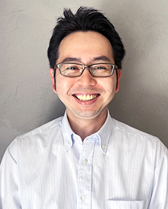
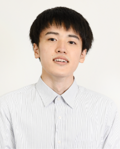
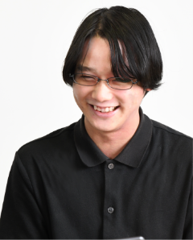
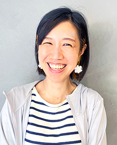

SES・受託開発・自社サービス
「３年後の自分」
キャリアマップが描けた！
今までの経験をどう活かすか。転職すると今までの経験を活かしきれないことが多いです。 でも当社なら、先輩や上司がその経験の活かし方をアドバイスしてくれます。 なぜなら、当社のほとんどのエンジニアが転職組だからです。当社に転職してきてマネージャーになった者、 エキスパートとして活躍している者、後進の指導にあたる者、様々な分野で活躍しています。
「先輩エンジニアからのメッセージ」
先輩の声
-
Manager
アプリ開発エンジニア
（プロジェクトリーダー）
Mさん
2015年入社 @東京Manager
アプリ開発エンジニア
（プロジェクトリーダー）
Mさん
2015年入社＠東京「 まずは自分がどうなりたいのか！ 」配下のMISTメンバーについて、将来像を決めて、日々の業務を遂行してもらうことです。 まずは自分がどうなりたいのか（プログラマーの道を究めたい、メンバーを管理する側につきたい等） についてメンバーと話し合った上で、どのようなことを意識し目標とすればそれに近づけるか、考えていきたいですね。 -

Manager
アプリ開発エンジニア
阿比留 貴志さん
2007年入社＠東京Manager
アプリ開発エンジニア
阿比留 貴志さん
2007年入社＠東京「 ネジメント能力の向上！ 」今の目標はマネジメント能力の向上です。目標とした理由としては、 面談等で部門メンバーの現場作業以外のスキル向上意識が低下していると感じました。 その要因の一つとして自分のマネジメント能力が足らないと感じたため、 マネジメント能力を向上させる必要があると考え目標としました。 -

SeniorManager
インフラエンジニア
齋藤 信一さん
2008年入社 @東京
SeniorManager
インフラエンジニア
齋藤 信一さん
2008年入社＠東京texttextテキストテキストテキストテキストテキストテキストテキストテキストテキストテキストテキストテキストテキストテキストテキストテキストテキストテキストテキストテキスト
-

インフラエンジニア
松本 健人さん
2019年入社 @東京インフラエンジニア
松本 健人さん
2019年入社＠東京texttextテキストテキストテキストテキストテキストテキストテキストテキストテキストテキストテキストテキストテキストテキストテキストテキストテキストテキストテキストテキスト -
アプリ開発エンジニア
片岡 飛鳥さん
2015年入社 @東京アプリ開発エンジニア
片岡 飛鳥さん
2015年入社＠東京「 人も環境も高め行きます！ 」参画現場のリーダーとして，弊社参画メンバー全体においての営業面での意識・行動改革と新人・若手のスキル （技術力・ヒューマン）向上のフォロー・教育、そのための体制の構築、環境の充実化。 -

アプリ開発エンジニア
イソップさん
2018年入社 @東京アプリ開発エンジニア
イソップさん
2018年入社＠東京「 どのフェーズにおいても対応可能に！ 」現在の目標は、自分の力で案件の各フェーズを進行できるようになることです。 これまで各フェーズ開始時や途中で上司の方に手順やヒントのようなものを教えて頂いていました。 しかし現場に後輩が増えて自分が教える立場になる機会も多くなりました。 そのため後輩に教えることができるよう日々の業務を意識しながら実施していきたいです。
-
アプリ開発エンジニア
須藤 貴郁さん
2021年入社 @東京アプリ開発エンジニア
須藤 貴郁さん
2021年入社＠東京「 会社から必要とされる人材に！ 」エンジニアとして一人前になることです。ゼロから始まって少しずつ業務にも慣れてきましたが、 知れば知るほどこの業界の広さと自分の無知に気付かされます。だからこそ、 ある程度1人でなんでもできるように一人前になって会社から必要とされたいと思い日々業務に取り組んでいます。 -
アプリ開発エンジニア
野田 愛香さん
2020年入社 @東京アプリ開発エンジニア
野田 愛香さん
2020年入社＠東京「 気軽に話しかけて下さい！ 」自分の目標は誰にでも愛される存在になること。仕事でも、プライベートでも。 「一人」は好きでも「独り」はとても嫌いなので、気軽に頼ってもらえる、 話しかけてもらえるような人間になりたいです。 -

アプリ開発エンジニア
富田 優花さん
2016年入社 @東京アプリ開発エンジニア
富田 優花さん
2016年年入社＠東京「 未経験でも大丈夫！ 」前職が金融業界でExcelが多少得意程度でITに関する知識はゼロ。 入社後VBAの資格を取りましたが、次は汎用性のあるJava・SQLで今の業務に関わるところで JavaScript・PHP辺りを取得し、資格マニアになって時短で出没時間短くても社内に富田の存在を知らしめます。
先輩から
「後輩へのメッセージ」
今までの全てが必要だった！